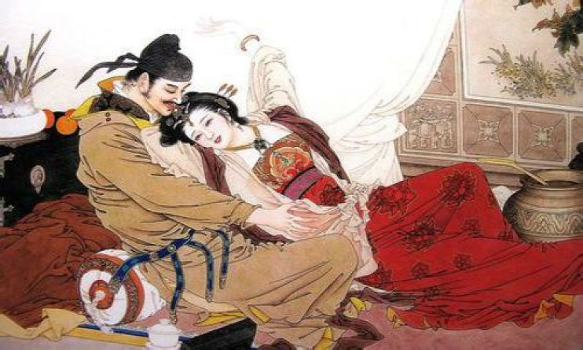
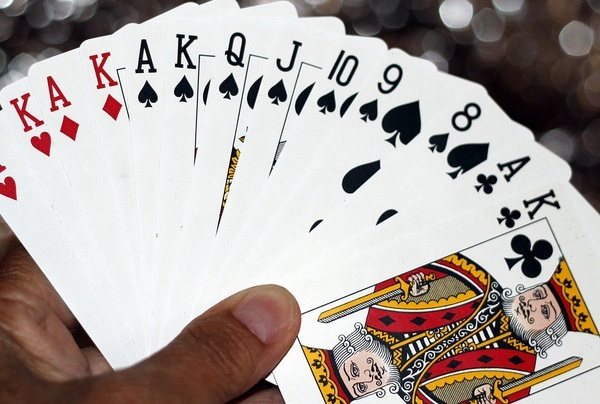
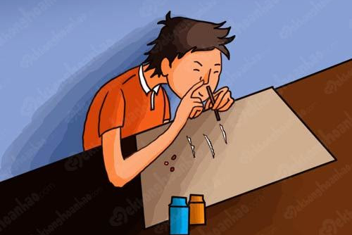

Đam mê rượu chè (Tửu)
Từ xa xưa, ham mê rượu chè được coi là thú vui của đa phần những nam nhân mà rất nhiều câu nói để “khích lệ” thói quen này “Nam vô tửu như cờ vô phong”, “Rượu nhập tâm như cọp vào rừng”,... Việc uống rượu không thể nói là xấu, nó chỉ xấu khi sau khi uống rượu người đàn ông như mất hết lý trí, có những hành động cực kỳ tàn bạo tác động đến vợ, đến con, rồi đập phá đồ đạc.
Thành viên đại diện cho Tửu: Đức Anh

Ham mê sắc đẹp phụ nữ (Sắc)
Sẽ khiến tinh thần của người đàn ông trở nên mê muội, bỏ bê vợ con. Thậm chí, nhiều người đàn ông vì đam mê “phụ nữ đẹp” mà không màng đến “tài”, “chí” từ đó mà hủy hoại công danh, sự nghiệp.
Thành viên đại diện cho Sắc: Xuân Triều
Ham mê cờ bạc (Tài)
Để lên án thói hư cờ bạc mà từ xưa các cụ ta đã có câu nói “Cờ bạc là bác thằng bần”, bởi chỉ có những người nghèo khó, ít học mới tin vào làm giàu bằng con đường “đỏ đen”. Tham gia vào những trò lô đề, đánh bạc với mong muốn nhanh chóng thắng được nhiều tiền mà không cần bỏ sức ra để lao động nhưng trên đời làm gì có ai may mắn mãi được. Khi chìm quá sâu vào mấy trò đỏ đen chẳng mấy chốc mà ôm nợ vào người, từ đó mà hủy hoại cả gia đình.
Thành viên đại diện cho Tài: Kiến An
Rơi vào nghiện ngập, hút chích (Khí)
Được hiểu là thói mê hút chích, một người bình thường mà dính vào hút chích thì hiếm ai có thể thoát ra ngay được, chỉ khi người đó thực sự nhận thức được vấn đề và thật kiên quyết mới có thể cai nghiện. Mà thực tế, số lượng người cai được nghiện không nhiều.
Thành viên đại diện cho Khí: Gia Đạt
